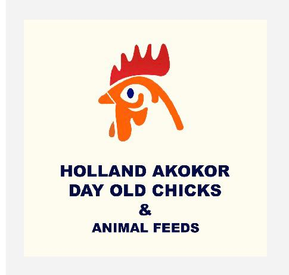

At Glory be to God Poultry Farm, we take immense pride in the quality of our products. Our commitment to excellence is unwavering, and we go to great lengths to ensure that every egg that leaves our farm meets the highest standards of freshness, nutrition, and taste. We understand that our customers rely on us for their daily sustenance, and we are dedicated to providing them with eggs that are not only delicious but also packed with essential nutrients. Our rigorous quality control processes, combined with our passion for poultry farming, allow us to consistently deliver eggs that exceed expectations. When you choose Glory be to God Poultry Farm, you can trust that you are getting the best quality eggs available in the market.
At Glory be to God Poultry Farm, we have high expectations for ourselves and our products. We strive to exceed the expectations of our customers by consistently delivering eggs that are fresh, nutritious, and delicious. Our team is dedicated to maintaining the highest standards of quality and ensuring that every egg that leaves our farm meets these expectations. We understand that our customers rely on us for their daily sustenance, and we take this responsibility seriously. By choosing Glory be to God Poultry Farm, you can expect nothing less than the best quality eggs that will satisfy your taste buds and nourish your body.

Dear [Monica Osei], CEO of Glory be to God farm, On behalf of Holland Akokor, we sincerely thank you for choosing to do business with us. Your trust and support mean a great deal, and we are honored to serve you. We remain committed to providing you with high-quality products and reliable service to help your business thrive. Your success is our success, and we look forward to strengthening this partnership even further. Business relationships thrive on trust, loyalty, and mutual respect. At Holland Akokor, we deeply value the confidence you have placed in us by choosing to do business together. Your patronage is not just a transaction; it is a partnership that strengthens our mission to deliver quality products and services to customers across Ghana. We recognize the importance of your support and wish to express our heartfelt gratitude for standing with us. Your decision to work with Holland Akokor demonstrates a shared commitment to excellence. We take pride in supplying day old chicks, animal feed, and other essentials that contribute to the growth of your enterprise. Each purchase you make affirms our dedication to meeting your needs with consistency and reliability. It is through customers like you that we are able to uphold our reputation as a trusted supplier in Ghana’s poultry industry. We also acknowledge the challenges that come with running a business in today’s competitive environment. That is why we strive not only to provide products but also to offer guidance, support, and encouragement. Your success is our success, and we are determined to walk alongside you as you expand and strengthen your operations. We believe that with continued collaboration, greater achievements lie ahead. Looking forward, we encourage you to continue this journey with us. Holland Akokor remains committed to innovation, quality, and customer satisfaction. By maintaining this partnership, we can ensure that your business receives the best resources and support available. Together, we can build a future marked by growth, sustainability, and shared prosperity. We encourage you to continue working with us, confident that together we can achieve greater results. Please know that ou r team is always ready to support you whenever you need us. Warm regards, [Edward Owusu] The CEO of Holland Akokor To Ghana Team.